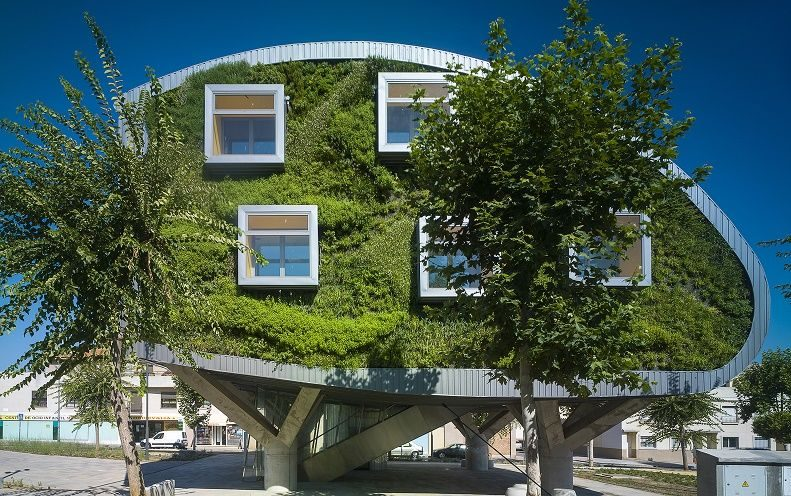
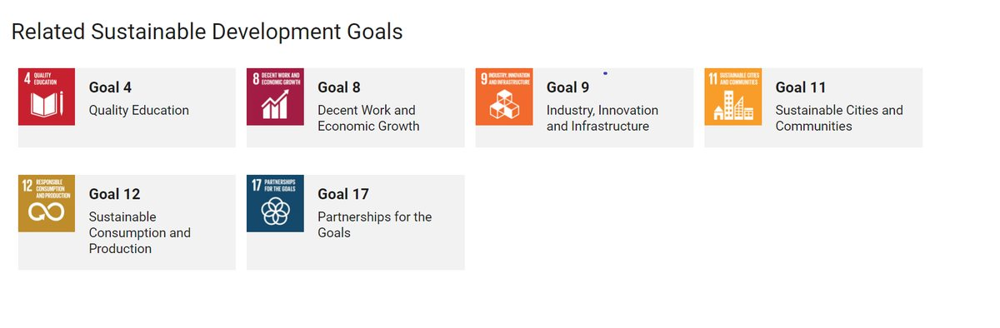
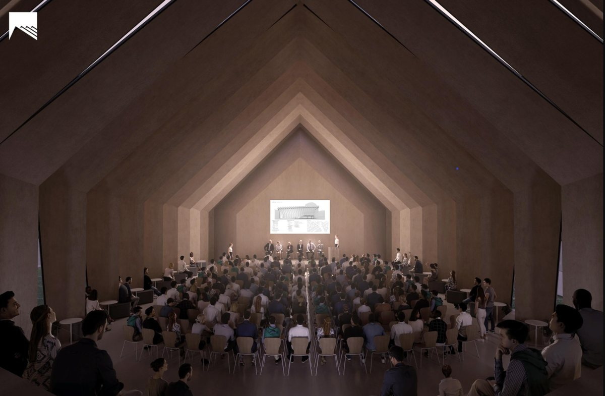
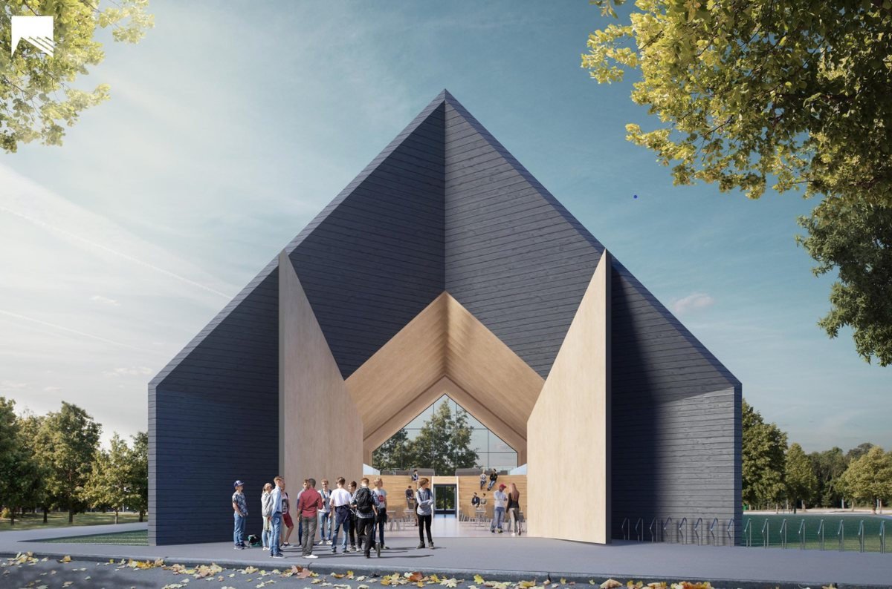
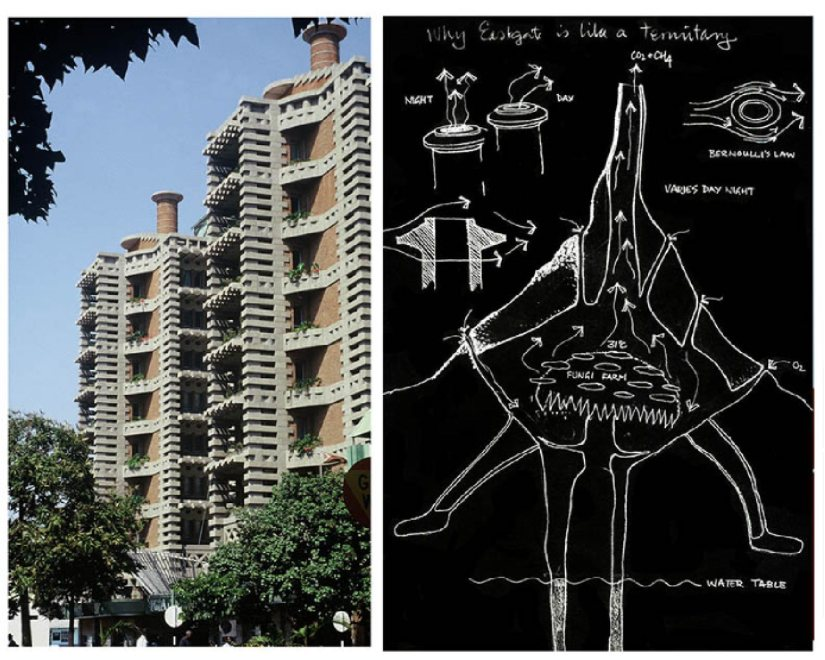
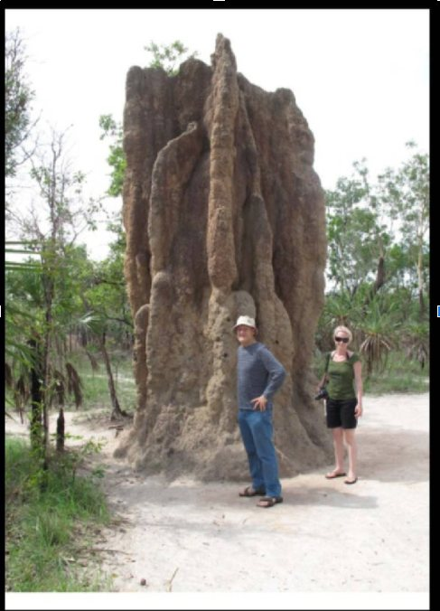
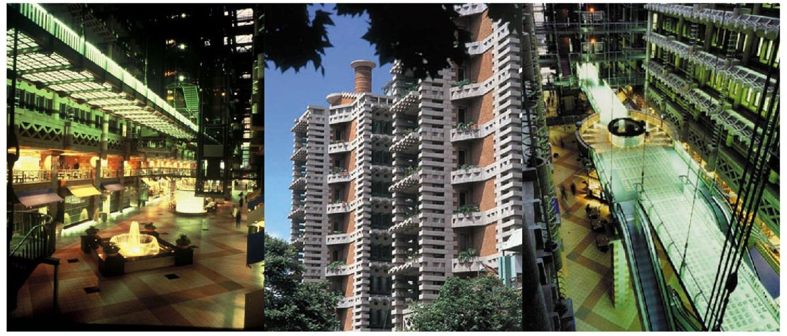

The United Nations Brundtland Commission defines sustainability as ‘’meeting the needs of the present without compromising the ability of future generations to meet their own needs’’. Sustainability is a requirement in every domain of life starting from sustainable transportation, sustainable cities, sustainable architecture etc [1].

According to the United Nations Environmental Programme, the carbon dioxide emission has increased to 9.95 gtCO2 (To have a medium chance of limiting warming to 1.5°C, the world can emit 770 gigatonnes (gt) of carbon dioxide (GtCO2).
It accounts for 38% of all energy-related CO2 emission including the building construction industry emissions. The building industry is currently shifting and sustainability becomes an important part of architecture. The buildings designed with the motive of sustainability aims to lessen their impact on the environment through energy and resource efficiency.
India’s carbon dioxide emissions have increased by 5 percent. India’s per capita emissions were about 40% of the global average and contributed 7% to the global carbon dioxide burden. The United States, the largest emitter, was responsible for 14%. As per its commitments to the United Nations Framework Convention on Climate Change, India has promised to reduce the emissions intensity of its economy by 2030, compared to 2005 levels [2].

Sustainability with respect to buildings is a broad term that refers to the building’s overall ability to provide a healthy, comforting environment without creating a negative impact on the environment. There are three pillars of sustainability which sustainable buildings take into account : planet, people and profit [3].

According to the UK Green building council (UKGBC), the built environment causes 40 percent of the UK’s carbon footprint. The UKGBC realised that the emissions from the operation of buildings hit their highest-ever level in 2019 thus catalyzing climate change and not contributing significantly to the goals of the Paris Agreement.

Standards were decided to be re-modified for newly constructed buildings post-pandemic and to minimize rapid emissions, reduce heating effect and to make sure that the energy and resources are used efficiently to ensure sustainability [4].
The following are some of the efforts taken in the field of architecture (in terms of innovative ideas involved in building designs ) to ensure sustainability:
‘Cooling Singapore’: urban heat island effects near the equator

When we take a thermal map of a city, we notice that the temperature of the city is lower when the places are greener. Asphalt, concrete and shingled roofs absorb more heat than trees and they retain the heat too!This phenomenon is called as the 'urban heat island effect'.
The USEPA ( United states Environemtnal protection agency) explains that the urban heat island effect increases energy costs (e.g., for air conditioning), air pollution levels, heat-related illness and mortality. The increasing global population accelerates the heating effect and thus the climatic change. So, scientists in Singapore have been studying urban heat island effect mitigation strategies to keep temperatures down.

Sustainable architecture plays a major role in mitigation strategies. They use the cooling effects of vegetation and imply them in the form of canopy layers (ground floors in the form of trees and shrubs), facades of buildings and on the rooftop of the buildings to reduce the heating effect and to cool down the urban cities close to the equator and thereby decelerate climatic change [5].b)
Sustainable architecture as an ancient tradition

The practice of sustainability as a concept for designs of buildings dates back to ancient times when our ancestors made sure that the resources that were available in great abundance for the future and were used efficiently without any wastage. They used materials indigenous to their location to keep their habitats cool or warm depending on their climatic zone and even constructed elaborate water supply and sewerage systems without the use of PVC pipes. [6]
A Lebanese architect builds sustainable schools

Lebanese architect Leila Meroue is using a technique for building sustainable schools in the Senegalese village of Tivaouane Peulh. The brick formula consists of four buckets of sand, four buckets of clay and one bucket of cement to produce the cooling environment inside the classrooms. Her schools increased the class attendance in Senegal, Africa thereby educating more young minds.
The bricks were made using a sack cut from a long roll into individual bags and filled with local earth, clay and just a little cement to bind the mix. The bricks were originally designed to build shelters on the ‘Moon’ but she finds them easy to transport, fill on site and use them efficiently on earth.
The brick formula serves as an ideal building material as the earth (soil) and clay mixes together and soaks up the cold air at night and deflects the heat during the day. The technique ensures that the classrooms are cool and resistant to rain thereby serving its multi-purposeful function.
Leila also plans on building such sustainable schools all around Senegal, Africa and anywhere around the world using the same prototype!! [7]
Sanjay Prakash on future-oriented sustainable architecture

Sanjay Prakash, green architect and the head of Studio for Habitat future (a team of building technologists whose primary focus is on future-oriented architecture) explains key features for sustainable architecture for tomorrow’s India through his sustainable architectural design.
He emphasizes building structures efficiently (especially in the urban regions) with simple building practices with ideas leaning towards the future so that the energy and resources do not run out in near future [8].
Sustainable cities can only be created by sustainable designs of buildings and their implementation should be as early as possible as sustainable cities which wisely use the resources and energy can not be built overnight!!!
Reducing the quantity of steel, providing additional insulation with Vermiculite and white tiles create a barrier to heat gain, keeps us warm in winter and cooler in summer. Installation of solar panels on the building and harnessing energy from sunlight is a brilliant usage of available natural energy.
Windows are most important to be considered. Their placement could reduce the energy needs of the building. The total energy consumption increases when the window-wall ratio is increased [9].
MIT’s technological approach to sustainable design

Longhouses - by their very definition - are long, narrow buildings, usually containing a single communal space used for civic or group activities.
The expansive space created will be used in multiple different ways, including co-working, exercise classes, social mixers, exhibitions, dinner gatherings, and lectures.

Mass timber’s recent growth in popularity can be largely attributed to its significant environmental benefits. The Longhouse design is not only a sustainable project but also the one that produces energy. The “sawtooth roof” is angled and orientated in such a way to maximize solar gains and daylight needs, while a low window-to-wall ratio maintains an efficient, insulated thermal envelope.
The MIT Mass Timber Design team is committed to the further development and research of projects like the 'Longhouses' continuing to explore “the future of sustainable buildings at the intersection of architecture and technology”[10].
Biomimicry and sustainable architecture

An architect Mike Pearce was hired by an investment group in Harare zimbabwe to build the largest commmercial building in the country but they did not want to pay for the air-conditioning. So, it was a challenging task for Mike to design a building that could cool itself!!

Biomimicry , in simple terms , is using natural processes to solve human problems. The termite mounds would look like little sky-scrapers but the minute pores present in their mound would help in the ventilation and that’s how millions of termites tend to survive inside a termite mound.

Mike Pearce used a similar idea! He built a normal building with concrete slab and bricks which absorbed heat without changing temperatures and acted like thermal mass (like a termite mound) . He used small windows to minimize heat absorption and increased the surface area of the building so that heat escaped during the night. Low powered fans pull in the cooling air from outside , concrete absorbs the cold air and insulates the cool air upwards.
When it’s morning, the temperature rises, warm air moves upwards and is released out of the chimneys. Therefore, the building cools itself during the day and the night. With this innovative design, the typical day temperature is 27.7-degree celsius and 13.8-degree Celsius during the night!! [11].
It doesn’t matter whether the problems are natural or artificial as innovative ideas for biggest problems are there with nature. Mother nature is always there to help us if we treat her the way she deserves to be treated!!
References
- United Nations Brundtland Commission
- Carbon emissions in India
- Sustainable buildings
- Climate change- UKGBC
- a) URBAN-HEAT-ISLAND-EFFECT -’Cooling Singapore’
b) Willingness to Pay for Urban Heat Island Mitigation: A Case Study of Singapore - Sustainability in ancient architecture
- Sustainable schools in Senegal, Africa
- Sanjay Prakash - Sustainable architecture for Tomorrow’s India
- Impact Analysis of Window-Wall Ratio on Heating and Cooling Energy Consumption of Residential Buildings in Hot Summer and Cold Winter Zone in China
- https://www.archdaily.com/tag/mass-timber
- Biomimicry and sustainable architecture